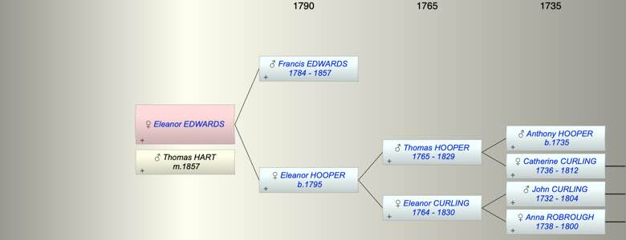

| [Index] |
| Eleanor EDWARDS |
|  |
| m. 08 Dec 1857 Thomas Parker HART at St Pancras |
| Parents: |
| Francis EDWARDS (1784 - 1857) |
| Eleanor HOOPER (1795 - ) |
| Siblings (1): |
| Francis EDWARDS |
| Events in Eleanor EDWARDS's life | |||||
| Date | Age | Event | Place | Notes | Src |
| 1857 | Death of father Francis EDWARDS (aged 73) | ||||
| 08 Dec 1857 | Married Thomas Parker HART | St Pancras | |||
| Created on a Mac™ using iFamily for Mac™ on 8 Oct 2023 |